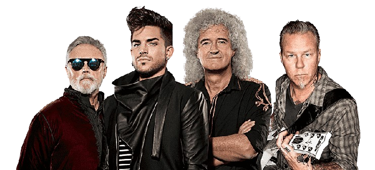

Su historia
Queen es una banda británica de rock formada en 1970 en Londres, que fue integrada originalmente por el cantante y pianista Freddie Mercury, el guitarrista Brian May, el baterista Roger Taylor y el bajista John Deacon (el cual llegaría un año después al grupo para completar la formación clásica). Sus primeros trabajos estuvieron influenciados por el rock progresivo y el hard rock, pero la banda se aventuró gradualmente en trabajos más convencionales y amigables con la radio incorporando más estilos, como arena rock y pop rock.

Antes de formar Queen, Brian May y Roger Taylor habían tocado juntos en la banda Smile. Freddy Mercury se apegó a la banda y los animó a experimentar con técnicas escénicas y de grabación más elaboradas. Se unió en 1970 y sugirió el nombre de «Queen». John Deacon fue reclutado en febrero de 1971, antes de que la banda lanzara su álbum debut homónimo en 1973. Queen apareció por primera vez en las listas de éxitos del Reino Unido con su segundo álbum, Queen II, en 1974. Sheer Heart Attack más tarde ese año y A Night at the Opera en 1975 trajeron a ellos el éxito internacional. Este último presentó «Bohemian Rhapsody», que se mantuvo en el número uno en el Reino Unido durante nueve semanas y ayudó a popularizar el formato de video musical.
El álbum de 1977 de la banda, News of the World, contenía «We Will Rock You» y «We Are the Champions», que se han convertido en himnos en los eventos deportivos. A principios de la década de 1980, Queen era una de las bandas de arena rock más importantes del mundo. «Another One Bites the Dust» de The Game (1980) se convirtió en su sencillo más vendido, mientras que su álbum recopilatorio de 1981 Greatest Hits es uno de los álbumes más vendido a nivel mundial con más de 50 millones de copias y en el Reino Unido es el álbum más vendido con más de 7 millones de copias y está certificado nueve veces platino en los EE. UU. Su actuación en el concierto Live Aid de 1985 y su concierto en Wembley Stadium en el año de 1986 están clasificadas entre las mejores recitaciones de la historia del rock por varias publicaciones. En agosto de 1986, Freddie Mercury dio su última actuación con Queen en Knebworth, Inglaterra. En 1991 murió de bronconeumonía, una complicación del sida. Deacon se retiró en 1997. Desde 2004, May y Taylor han realizado giras como «Queen +», con los vocalistas Paul Rodgers y Adam Lambert.

Queen ha tenido una presencia global en la cultura popular durante más de cinco décadas. Las estimaciones de sus ventas de discos oscilan entre 250 y 300 millones, lo que los convierte en uno de los artistas musicales con más ventas del mundo. En 1990, Queen recibió el Brit Award por su destacada contribución a la música británica. Fueron incluidos en el Salón de la Fama del Rock and Roll en 2001, y como cada miembro había compuesto sencillos exitosos, los cuatro fueron incluidos en el Salón de la Fama de los Compositores en 2003. En 2005 recibieron el Premio Ivor Novello a la Colección de Canciones Destacadas de la British Academy of Songwriters, Composers and Authors, y en 2018 recibieron el premio Grammy Lifetime Achievement Award.